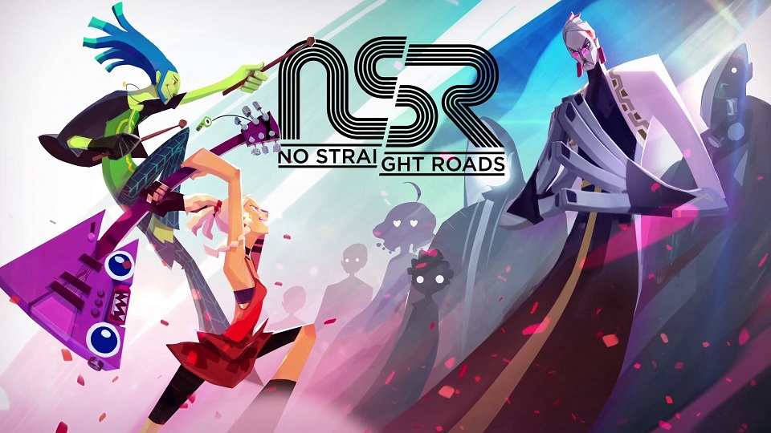
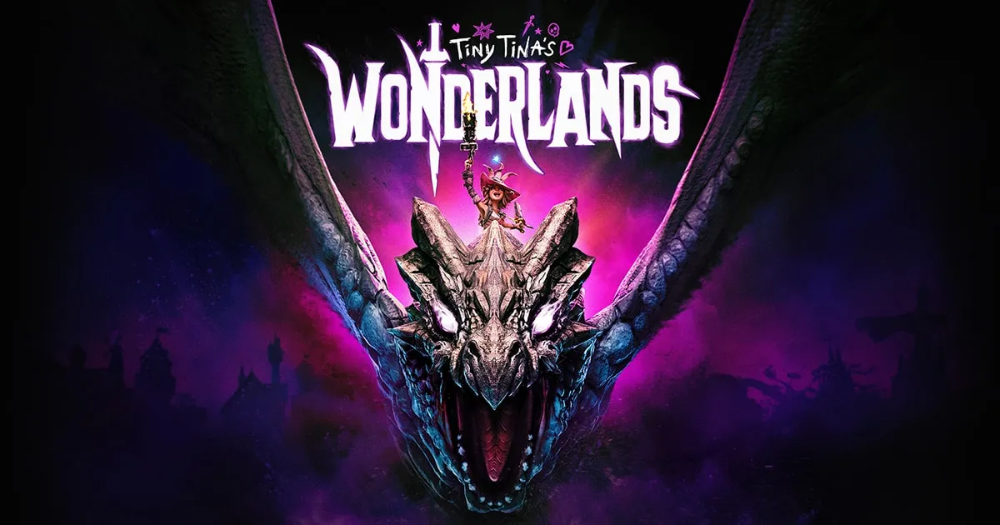

Video Games
Back
I love a wide variety of games, so long as they have an interesting story to tell. One of my favourites is Portal 2 because of its unique level design and how it pushes me to think. The reason I prefer the second one is because more backstory is included in this one. I like indie games as well! The last indie game I played was No Straight Roads, a game where you fight against a corrupt government with the power of rock music. It's a really colourful game with tons of personality and a great soundtrack. It is a little buggy though. I am current playing Wonderlands which is a spinoff game of the Borderlands series, giving the original games a fantasy and DND inspired twist.


